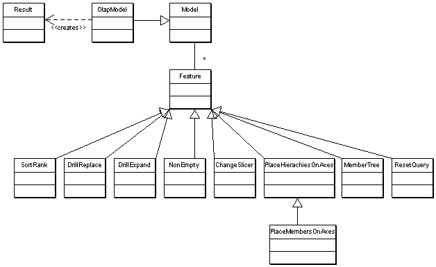

|
|||||||||
| PREV PACKAGE NEXT PACKAGE | FRAMES NO FRAMES | ||||||||
See:
Description
| Interface Summary | |
|---|---|
| CalcMember | erzeugt ein berechnetes Element |
| CalcSet | |
| CellProperties | denotes that the model supports cell properties for alerting. |
| ChangeSlicer | allows to place selected members on the slicer axis. |
| ClickableExtension | |
| DrillExpandMember | allows to expand / collapse members on an axis. |
| DrillExpandPosition | allows to expand / collapse members on an axis. |
| DrillReplace | Substitues the members of a hierarchy with the children of a member. |
| DrillThrough | |
| ExpressionParser | serialisiert expr. |
| MdxQuery | Lets the user view and modify the mdx |
| MemberDeleter | allows the user to delete calculated members from the query |
| MemberProperties | retrieves the description of the available member properties |
| MemberTree | exposes parent/child relationship between members. |
| NonEmpty | suppresses the display of empty rows/columns on an axis. |
| PageInfo | Describes a page |
| PlaceHierarchiesOnAxes | Allows to place hierarchies on the visible query axes. |
| PlaceMembersOnAxes | allows to place a set of members on a visible query axis. |
| ResetQuery | resets the query to its initial state. |
| SetParameter | sets a parameter of the MDX Query |
| SortRank | Allows sorting and ranking |
| SwapAxes | |
| Class Summary | |
|---|---|
| ClickableExtensionImpl | |
| Exception Summary | |
|---|---|
| ExpressionParser.InvalidSyntaxException | |
| InvalidExpressionException | |
| MemberTree.TooManyMembersException | thrown if too many member would be returned |
Defines navigations (query transformations).

Example: a template defines the formula
100 * (A - B) / A where A
and B are parameters of type Measure. To create
a concrete CalcMember the parameters of the template will be replaced by the
values the user specified, for example
100 * ([Measures].[Revenue] - [Measures].[Cost]) / [Measures].[Revenue].
OlapModel,
Model,
Extension
|
|||||||||
| PREV PACKAGE NEXT PACKAGE | FRAMES NO FRAMES | ||||||||